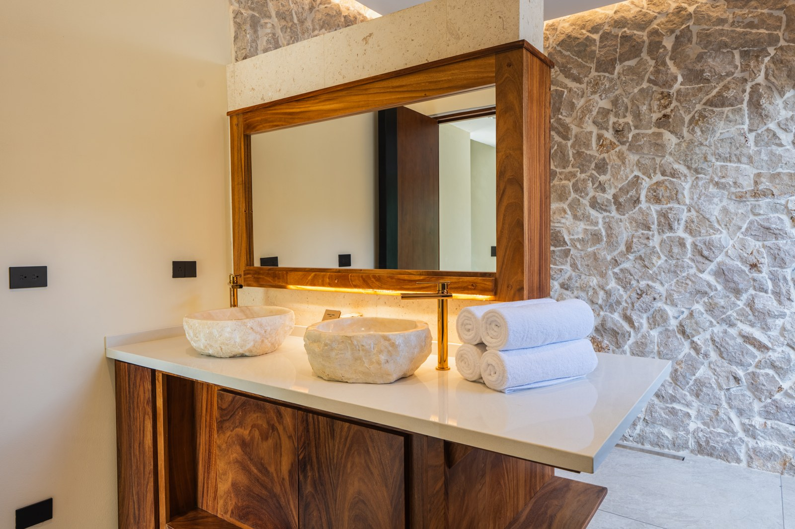
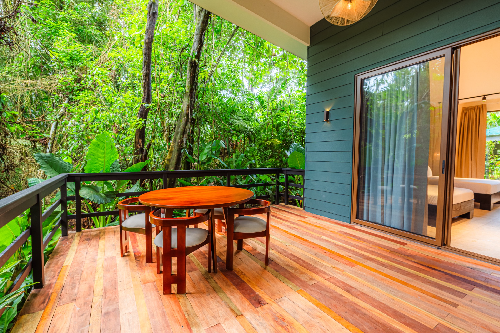
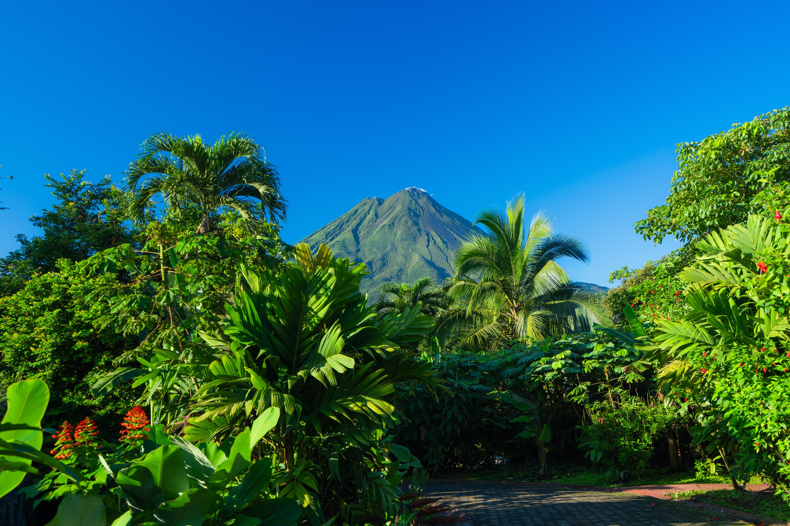

Meet the Rainforest Resorts Family

If you already know Chachagua, I would like to suggest a new way to return to Costa Rica. The family has grown: Chachagua Rainforest Resort & Hot Springs and Arenal Rainforest Resort now come together as Rainforest Resorts. I suggest a journey that begins along Chachagua’s forest trails and continues at Arenal, with time to discover the rainforest, explore local traditions and head out into the region around the volcano.
Behind this new chapter are Gaudelio Zúñiga and his family. Drawing on their real estate background and connection to the land, they saw an opportunity to contribute to Chachagua’s future. They acquired the property, invested in its spaces and improved the guest experience, helping it become a regional success story. Today, they bring that commitment to Arenal, guiding its transformation with the ambition of creating another landmark in local hospitality. Rainforest Resorts grows from that family vision.
The reservations team is evolving too. Rainforest Resorts’ Travel Designers do more than confirm a room: they listen to how you enjoy travelling and help shape your visit. Before and during your stay, you can turn to them for accommodation advice, transfers and an itinerary that leaves room for discovery and time to yourselves.
Whichever resort you choose, the Travel Designers can recommend the same collection of carefully curated off-site tours and experiences. Where you sleep may change; the local knowledge supporting your trip stays with you. They help you select outings and coordinate their timings, transport and reservations from each hotel.
Arenal is beginning a new chapter too. If you would love to discover it, ask the Travel Designers about the rooms available for your dates.
Two Properties, a Stay at Your Pace
I like to think of this journey as two chapters of the same holiday. First, a few days to explore Chachagua at an unhurried pace, walk into the forest with a guide and share a coffee and cacao experience. Then a change of setting as you continue to Arenal, where you can set aside a day for an adventure in the volcano region. Moving between the resorts becomes another way to keep discovering Costa Rica.
To enjoy both, I recommend seven days and six nights: three nights at Chachagua followed by three at Arenal. The team can adjust that balance around your flights and the things you want to do. Here is how I would bring the journey together, with three complementary experiences and time between them to enjoy each place. Once you share your dates, your Travel Designer can prepare a personalised proposal with availability, rates and your chosen services.
A Conversation Before Choosing a Room
I recommend talking with one of the Travel Designers before choosing your room. Share your interests, hobbies and needs; as a local adviser, they can help you shape a stay around what matters to you. Perhaps it is a terrace where you can talk after a walk, a stay surrounded by forest or a room to return to after exploring Arenal. Tell your adviser what draws you to each resort and how you would like to spend the hours between outings. Those details help connect the two parts of your holiday.
Explore Chachagua’s accommodation and share your favourites with the team. At Arenal, ask the team to guide you through Bungalow Arenal and One Bedroom Vista Arenal. My advice is to review photographs and features of the available option with your adviser. The terraces of all Arenal rooms face the volcano; whether it is clear depends on the weather and the clouds around its cone.
Three Nights to Explore Chachagua's Rainforest

My suggestion for the beginning of the trip is simple: arrive without rushing. Your first day can be about arriving, settling in and allowing the pace of the trip to change. Let the team know when you expect to reach Chachagua so they can help you review dining options and plans for that first afternoon. Save the activities for the following day and give yourself time to enjoy the place you will call home for the next three nights.
To explore another side of the forest, I suggest a guided night walk through Chachagua’s rainforest. Heading out as darkness falls invites a different kind of attention: you look where your guide points, listen and notice details you might have passed during the day. What appears along the route depends on nature. Learning to observe together, with someone who can help you understand the surroundings, is part of the pleasure of the walk.
I suggest choosing an evening that leaves time to get ready and enjoy dinner without rushing. Our Travel Designers explain the route, necessary equipment and participation requirements. If you would rather explore the forest by daylight, tell your Travel Designer. What matters is choosing an experience you and your companion will enjoy.
If you enjoy discovering the story behind what reaches your table, make time for Chachagua’s coffee and chocolate tour. I recommend getting a close look at the demonstrations and making the most of your conversation with the guide: ask how cacao becomes chocolate and what happens to coffee before it reaches your cup. Those details connect familiar flavours with the work and agricultural traditions of Costa Rica.
My advice is simple: bring your curiosity and leave time for questions. During the tastings included in your visit, pause to notice the aromas and flavours, and share what catches your attention. Learning about the processes these ingredients go through before reaching the table can give your next coffee or piece of chocolate a different story. When you book, ask which demonstrations and tastings are part of the tour.
Between outings, I recommend leaving time to enjoy the resort itself. Settle into your room, step onto the patio or terrace if your accommodation has one, and save an afternoon for the pool. Make room for the views, the changing light towards evening and a conversation without checking the time. My advice is to leave the end of the afternoon free, so you can get ready at leisure and enjoy a good dinner at the resort restaurant. Those hours belong to the holiday too; a day does not need an excursion to feel well spent.
From Chachagua’s Forest to Your Arenal Stay
On the fourth day, I suggest continuing to Arenal Rainforest Resort. Ask your Travel Designer to coordinate departure and arrival times, the route and any transport you need. I recommend allowing space to say goodbye to Chachagua, make the journey and settle into your next room. You can enjoy the change of setting without having to head straight out to another activity.
Once you arrive, the rest of the day can be about getting to know your surroundings and talking with the team about your upcoming outings. If you would like to book something that afternoon, ask the team how it fits your arrival time. What you have already shared about your interests helps them keep the journey connected as you begin your stay at Arenal.
Arenal as Another Base for the Region

From Arenal, I suggest continuing exploring La Fortuna and its surroundings. This second stay brings the family’s other property into your itinerary as you discover experiences around the volcano region. Talk through the location of each outing with your Travel Designer and choose what you would enjoy doing from here. My advice is to review transport times with the team so the days feel comfortable.
If an adventure appeals, my suggestion is the canopy tour at Arenal Ecoglide Park. This is an off-site excursion, adding a different experience to the journey that began in Chachagua’s forest. Before you book, ask about the operator’s conditions, transport, equipment and participation requirements. If you would prefer to explore at a different pace, your adviser can suggest another outing from the collection.
For day six, I prefer to leave the choice open. You might add another experience from the collection or spend more time enjoying your accommodation before heading home. You can ask about the same off-site tours from either resort; timings, transfers and costs are arranged from the hotel where you are staying. If you decide to return for an activity inside Chachagua’s reserve, ask the team to coordinate that visit separately.
Discover Arenal’s New Chapter
Arenal Rainforest Resort welcomes you to the La Fortuna area, facing Arenal Volcano. If you would love to discover this new chapter, I recommend asking about the rooms available and explaining what matters to your rest. The Travel Designers can guide you with current photographs and details of the available accommodation.
Seven Days to Discover the Rainforest Resorts Family
This is how I suggest bringing the two stays together: arrive at Chachagua on day one, spend days two and three discovering the forest and coffee and cacao, then continue to Arenal on day four. Day five can be your adventure day; day six is yours to shape. Keep day seven for your journey home. That gives you six nights across the two resorts, with the same thoughtful attention accompanying you along the way.
If your flights call for a different arrangement, your Travel Designer can help adjust it. For me, the thread connecting this stay begins at Chachagua, where the forest, coffee and cacao bring you closer to Costa Rica’s nature and traditions. It continues at Arenal Rainforest Resort, with time to enjoy the volcano region’s tropical beauty and hot springs. If adventure appeals, ask about ziplining, hiking, ATV outings, river tubing or kayaking, and paddleboarding or kayaking on Lake Arenal. My advice is to choose the experiences that excite you most and give yourself time to enjoy them. Our Travel Designers can help connect those outings, their transfers and your nights at both hotels into a stay that feels right for you.
Frequently Asked Questions
Can we book the six nights as one itinerary?
Yes, we can coordinate both stays in a personalised proposal. Our Travel Designers confirm availability, rates, activities and transfers for your dates, with included services detailed in the quotation.
Which Arenal accommodation can I choose?
Primarily the One Bedroom Vista Arenal category. Ask our Travel Designers about available accommodation, current photographs and the stay conditions expected for your visit.
Do all Arenal rooms face the volcano?
Yes. All rooms at Arenal Rainforest Resort have terraces oriented towards the volcano. Visibility depends on the weather: clouds can cover the cone, particularly at its elevation. My advice is to enjoy the landscape without expecting the volcano to remain clear all day.
How can I organise airports and the hotel change?
Share your flights into San José (SJO) or Liberia (LIR) with our Travel Designers. The hotel books and coordinates your agreed transfers, including the journey between resorts, and you pay the hotel directly. Before confirming, review the route, approximate journey times and price in your quotation.
Do I need to rent a car?
I recommend comparing hiring a vehicle with arranging transfers with your Travel Designer, according to your outings and preferences. Transport is coordinated and quoted; it is not automatically included.